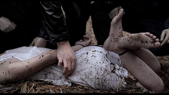
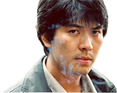
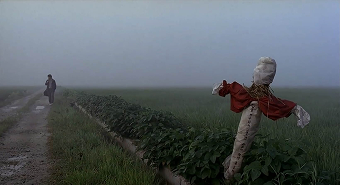
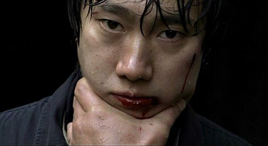
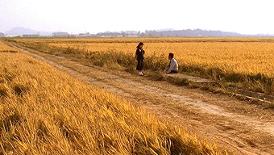

1986년 가을, 경기도 화성에서 강간살해 당한 여성의 시체가 발견되고, 비슷한 수법의 사건이 연이어 발생한다. 얼굴만으로도 범인을 알 수 있다는 형사 박두만(송강호)은 살해당한 여성을 평소 쫓아다녔다는 지능이 모자란 백광호(박노식)를 범인이라 확신하고, 형사 조용구(김뢰하)와 함께 구타를 하며 자백을 강요한다. 한편 서울에서 자원해 온 서태윤(김상경)은 사건 파일을 검토하며 실마리를 찾으려 한다. 백광호를 데리고 현장 검증을 나온 자리, 취재진들로 둘러싸인 그곳에서 백광호는 범행 사실을 부인한다. 서태윤은 비오는 날 빨간 옷을 입은 여자가 범행 대상이라는 공통점을 밝혀내고 함정수사를 벌이지만, 다음날 아침 다른 여인의 사체가 발견된다. 수사는 점점 미궁으로 빠지는 가운데, 근처 공장에서 일하는 박현규(박해일)가 유력한 용의자로 지목된다. 때마침 범인의 유전자 단서가 나오고, 수사본부는 미국으로 유전자 감식을 요청한다. 박두만과 서태윤은 박현규가 범인이라 확신하지만, 마침내 도착한 감식 결과에는 그와 범인의 유전자가 일치하지 않는다는 소견이 적혀 있다. 2003년, 박두만은 우연히 17년 전의 사건 현장을 지나게 되고, 첫 번째 시체가 발견된 곳을 들여다본다.